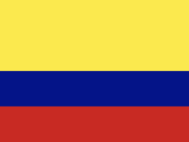

Colombia's 180-Day Visitor Limit: 90 Days Plus an Extension, Per Calendar Year
Visa-exempt visitors get up to 90 days at entry and can extend to 180, but the 180 is a total for the calendar year, not per trip. Here is how the days add up and when they reset.
Last verified: October 2026
In short: if your nationality does not need a visa for Colombia, you get an entry permit of up to 90 days when you arrive. You can extend it once per entry by up to 90 more days, but your days in Colombia may not exceed 180 in the same calendar year, continuous or not, counting every visit. The count resets on 1 January. Ask for the extension online at least five working days before your entry permit runs out.
- At entry
- Entry and stay permit (PIP) of up to 90 days
- Extension
- One per entry, up to 90 days
- Yearly limit
- 180 days in a calendar year, all visits added together
- Resets
- 1 January
- Apply for the extension
- Online, at least five working days before the entry permit expires
- Who
- Visitors whose nationality does not need a visa; visa holders follow their visa
- Legal basis
- Migración Colombia Resolution 2061 of 2020, articles 16–18
The rule
Colombia gives visa-exempt visitors an entry and stay permit (Permiso de Ingreso y Permanencia, PIP) at the border. Migración Colombia can extend the stay with a temporary stay permit (Permiso Temporal de Permanencia, PTP) as long as the total does not go past 180 calendar days, continuous or not, within the same calendar year. Three points decide most cases:
- The 180 days are a yearly total. Migración Colombia keeps a record of the days each foreigner spends in the country, and every visit in the calendar year counts toward the same 180.
- The extension has a deadline. It is requested online, at least five working days before the entry permit expires. It is not granted automatically.
- The officer decides the days at entry. The permit can be shorter than 90 days, and the stamp or record shows what you were given.
How to count it
- List every stay in Colombia this calendar year, with arrival and departure dates.
- Count the days in each stay, including the arrival and departure days.
- Add them up. The total may not pass 180 before 31 December.
- For the current stay, also check the days on your entry permit or extension.
The resolution does not say whether the day you leave counts. Counting both travel days is the cautious reading.
Two visits in one year. You spend 1 February to 1 May 2027 in Colombia: 90 days. You come back on 1 September. You have 90 days left for 2027, so with an extension that visit can last until 29 November 2027, and no later.
The reset. On 1 January 2028 the count starts again from zero, whatever you used in 2027.
The visitor limit and Colombian tax residence
The yearly reset does not apply to tax. Colombia makes you a tax resident if you spend more than 183 days in any 365-day period, and that period can cross 1 January. A visitor who uses the full 180 days in the second half of one year and the full 180 in the first half of the next can spend 360 days in Colombia within 365 days without breaking the visitor rule, and is then a tax resident.
For example, 1 July to 27 December 2027 is 180 days, and 1 January to 28 June 2028 is another 180. See Colombia's 183-day tax residency rule.
Beyond the day count
Visitors who hold a Colombian visa follow the terms of that visa rather than this yearly limit. Staying beyond the permitted days is an immigration offence that can bring a fine and affect future entries. For how overstays are treated elsewhere, see overstaying a visa or stay limit.
AtlasDays tracks Colombia's 180-day visitor limit automatically
Log your trips once. The Colombia Visitor Stay tracker adds up your days in Colombia across the calendar year, arrival and departure days included, privately on your iPhone, and shows how many of the 180 you have left. A Colombia Tax Residency tracker can watch the rolling 365-day count alongside it.
Get AtlasDaysFAQ
How long can I stay in Colombia as a tourist?
Up to 90 days per entry, extendable by up to 90 days, with a ceiling of 180 days in a calendar year across all your visits. Nationalities that need a visa follow the visa instead.
Is Colombia's 180-day limit per calendar year or rolling?
Per calendar year. The count resets on 1 January. Colombian tax residence, by contrast, looks at any 365-day period, which can cross the new year.
When do I have to apply to extend my stay in Colombia?
At least five working days before your entry permit expires, through Migración Colombia's online service.
About this article: AtlasDays provides general information, not legal, tax, or immigration advice. Rules change and outcomes depend on your circumstances, so never rely on it alone: check the linked official source or ask a qualified professional.